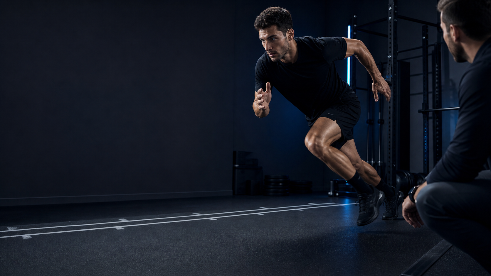
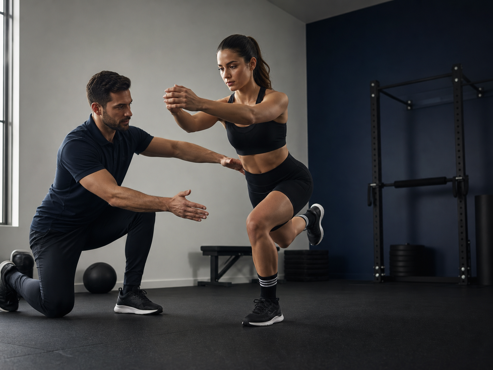
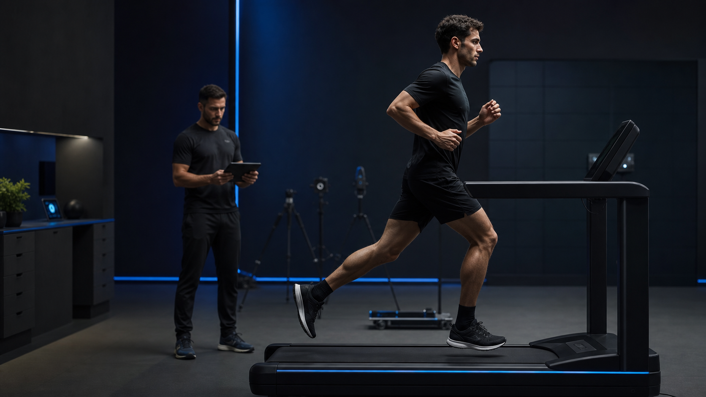
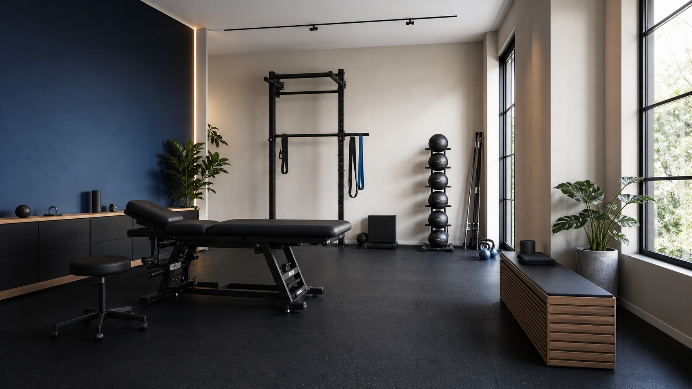
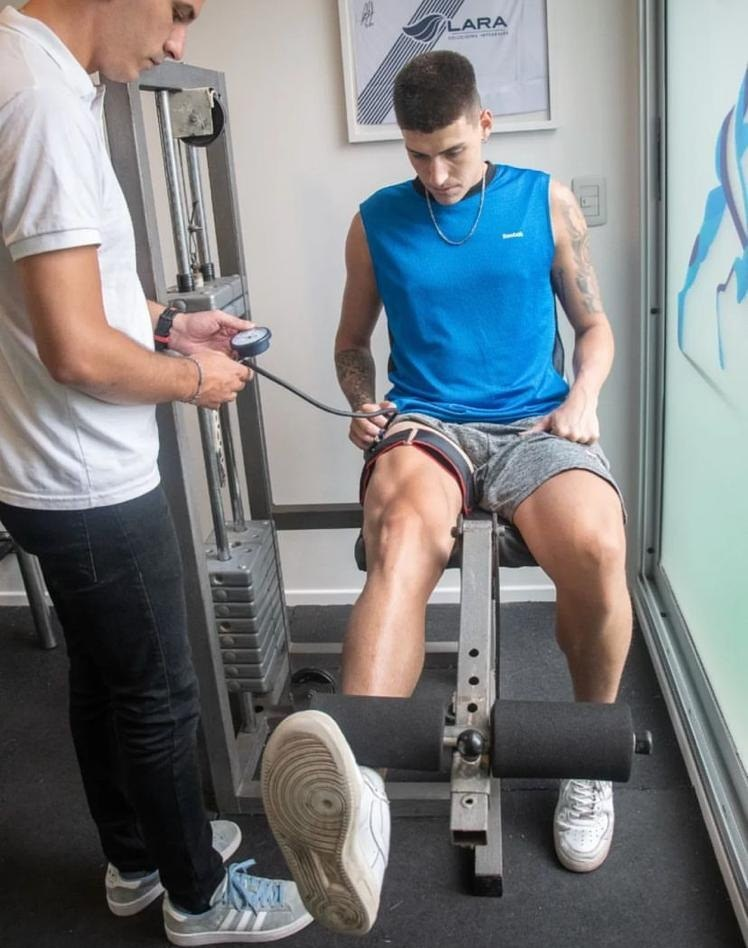
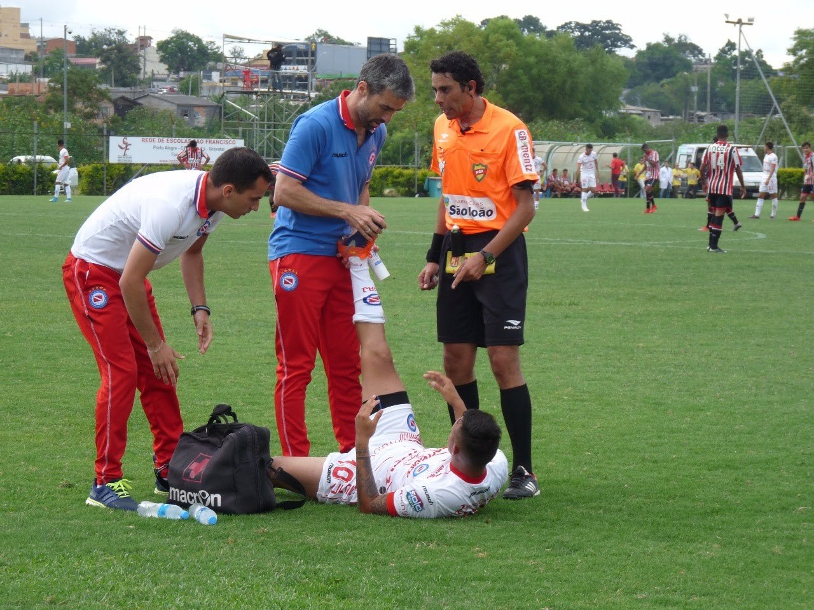
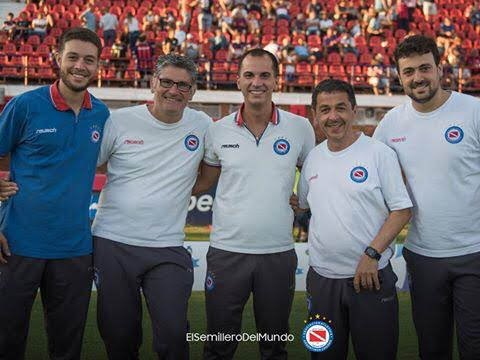

Recuperación deportiva
Para volver a entrenar y competir con progresiones claras, sin saltear etapas.
Lesiones · Postoperatorios · Dolor
Kinesiología deportiva · Núñez, CABA
Recuperación deportiva y evaluaciones funcionales para volver a entrenar con seguridad.
SPORTS REHAB / 01
¿Qué necesitás recuperar?
Empezá por tu objetivo.01 / ENFOQUE
Un proceso que se entiende
Se trata de recuperar capacidad, volver a confiar en tu cuerpo y estar listo para lo que viene.
Servicios
Trabajamos con criterio deportivo y seguimiento cercano. Cada sesión responde a una etapa concreta de tu recuperación.
Para volver a entrenar y competir con progresiones claras, sin saltear etapas.
Lesiones · Postoperatorios · DolorReconstruimos fuerza, movilidad y confianza para que tu cuerpo responda mejor.
Fuerza · Movilidad · ControlDetectamos oportunidades de mejora antes de que se conviertan en un límite.
Running · Deportes · Entrenamiento
02 / RECUPERACIÓN
Recuperación deportiva
Tu recuperación necesita objetivos concretos, carga progresiva y decisiones basadas en cómo responde tu cuerpo.
Evaluaciones funcionales
Evaluamos cómo te movés para diseñar un plan con foco, contexto y objetivos reales.

Cómo trabajamos
Entender qué hacemos y por qué lo hacemos también es parte de recuperar confianza.
Tu historia, tu actividad y el objetivo que querés recuperar.
Observamos movimiento, fuerza y demandas específicas.
Definimos una estrategia progresiva, concreta y medible.
Ajustamos el plan mientras volvés a tu actividad.

Sobre SANTÉ
Kinesiología deportiva con mirada integral, trato cercano y foco en tu evolución.
En nuestro consultorio de Núñez combinamos evaluación, ejercicio y seguimiento profesional para ayudarte a volver con más seguridad.
Dirección profesional
Director de SANTÉ · M.N. 11.154
Kinesiólogo especialista en lesiones deportivas, con experiencia en consultorio, alto rendimiento y campo de juego.



Experiencia SANTÉ
Una forma de trabajar cercana, profesional y orientada a resultados sostenibles.
Cada ejercicio responde a una etapa y a un objetivo concreto de tu recuperación.
Revisamos tu evolución y ajustamos la carga según la respuesta de tu cuerpo.
Trabajamos para que vuelvas a tu actividad con más capacidad y confianza.
Coberturas
Te orientamos por WhatsApp sobre atención particular, disponibilidad y modalidad de reintegro.
Preguntas frecuentes
Sí. Acompañamos procesos de recuperación, readaptación y vuelta progresiva a la actividad.
Según tu objetivo, evaluamos fuerza, movilidad, estabilidad, control motor y patrones de movimiento.
Depende del caso. Si ya tenés estudios o una indicación, podés compartirlos al escribirnos.
Escribinos por WhatsApp y te orientamos sobre disponibilidad, modalidad de atención y coberturas.
Contacto
Contanos qué querés recuperar. Te ayudamos a dar el primer paso con claridad.